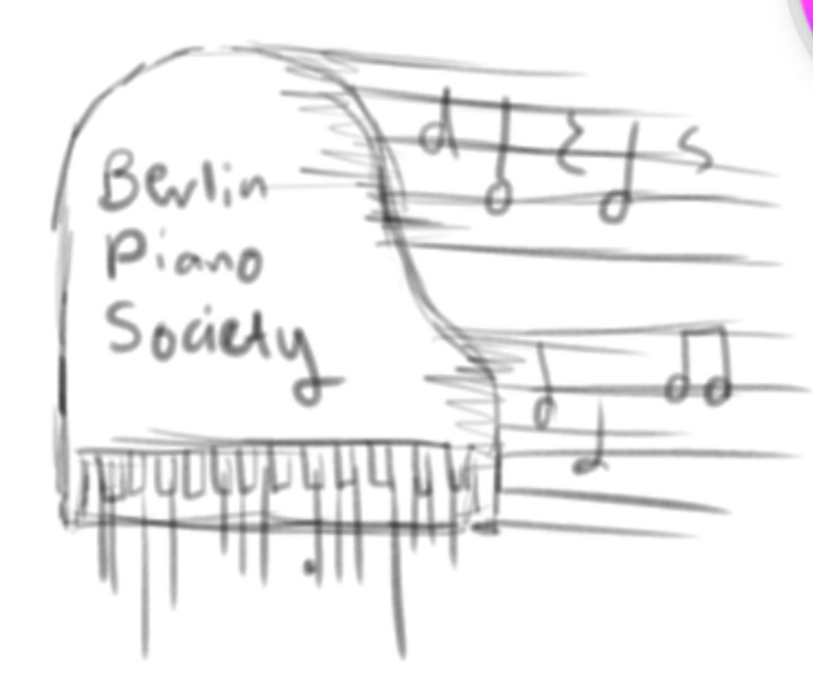
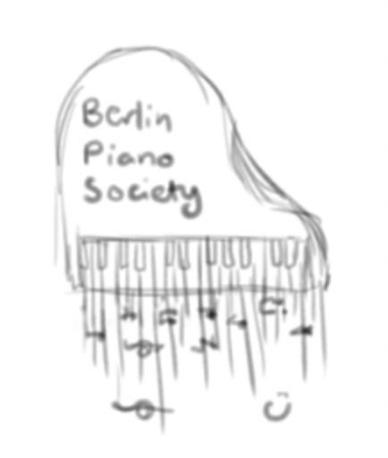
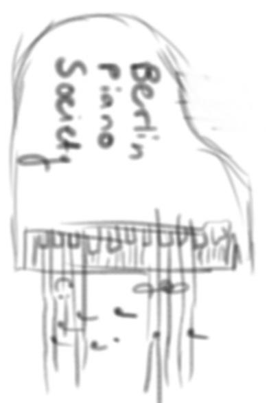
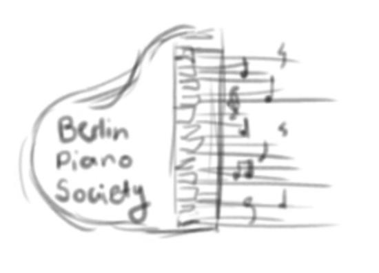
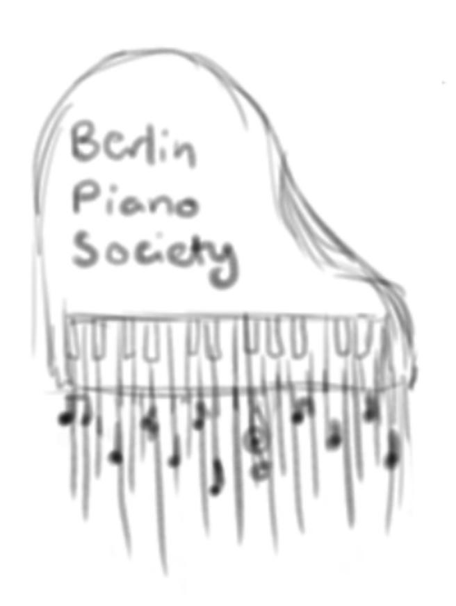
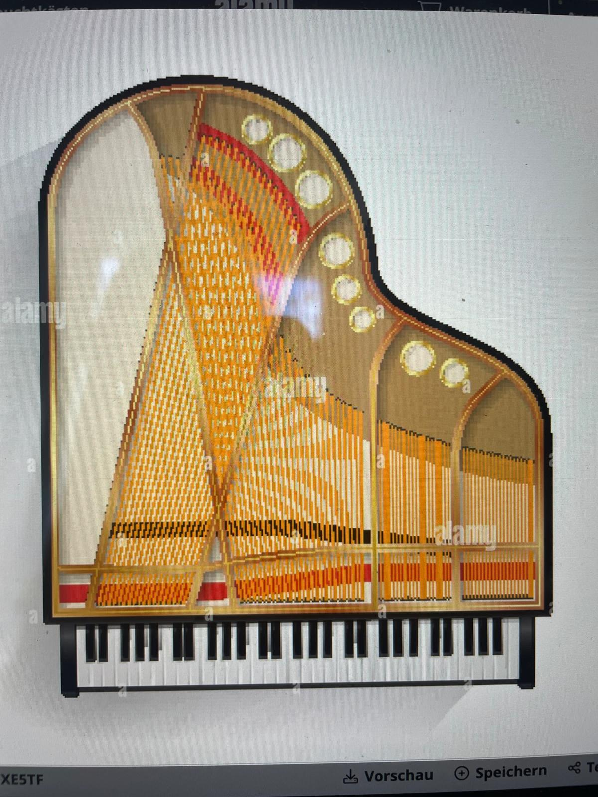

// work in progress
Logo studies





Palette

// Colours sampled from a grand piano's interior — amber strings, brass tuning pins and a strip of felt red, set against the black-and-ivory of the keys.